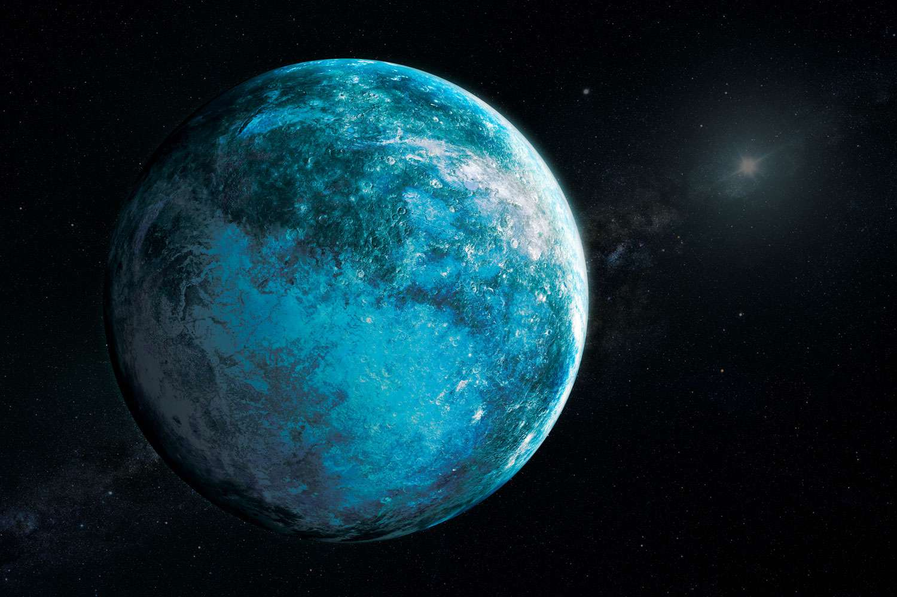
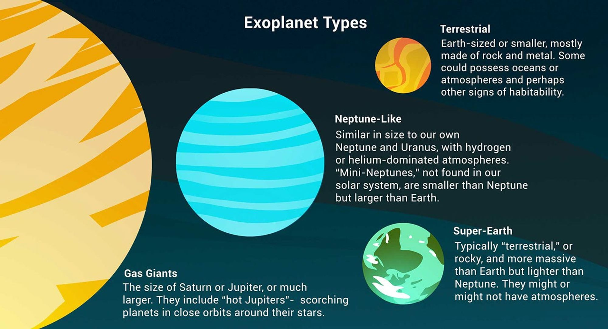
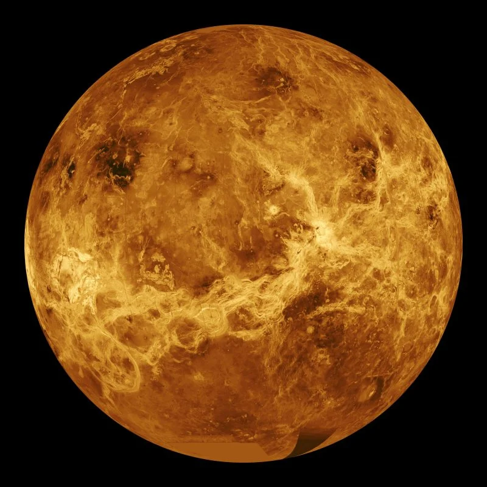
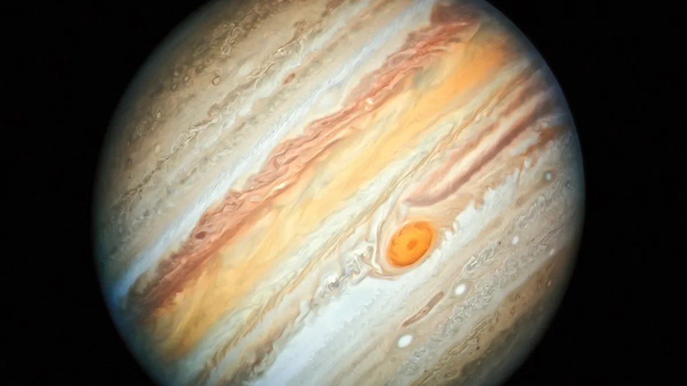
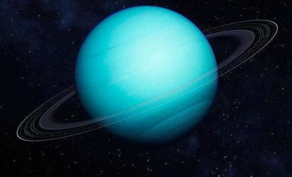
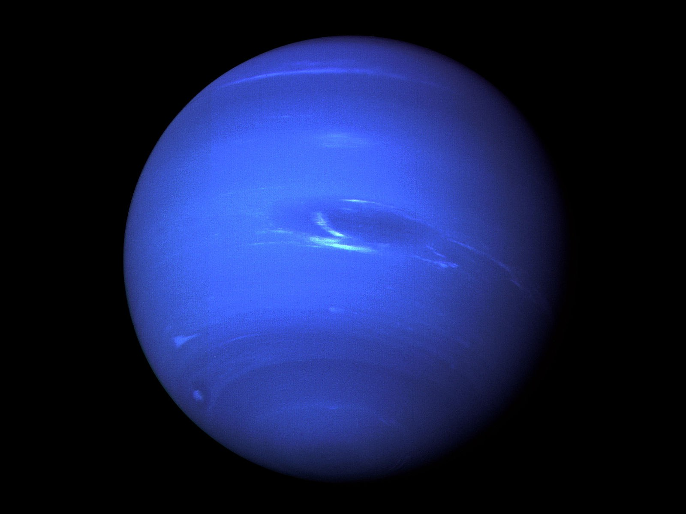
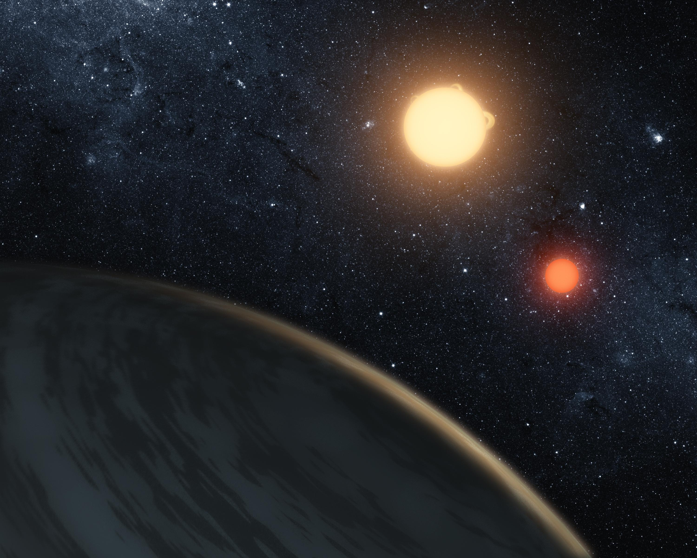
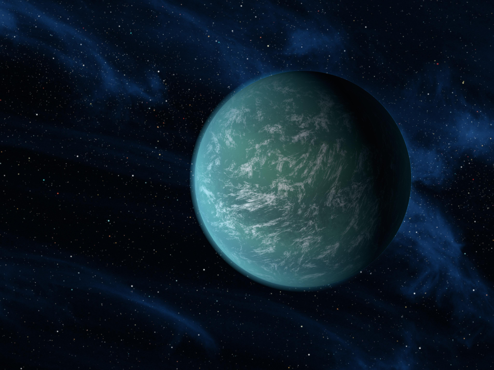

PLANETS

A planet is a large, rounded world shaped mainly by its own gravity. Planets form from the leftover material around young stars and end up on stable orbits. They can be rocky, icy, or dominated by gas—and the same basic physics can produce very different outcomes: scorching lava worlds, frozen giants, and potentially habitable Earth-like planets.

What makes a planet a planet?
In everyday astronomy, a planet is a body that orbits a star and is large enough to be rounded by gravity. In our Solar System, the official (IAU) definition adds a third idea: the object must have cleared its orbital neighborhood of other similar-sized bodies.
That last criterion is why Pluto is called a dwarf planet: it shares its region with many Kuiper Belt objects. For exoplanets around other stars, astronomers usually focus on the practical parts—orbit + size/mass—because “clearing the neighborhood” is harder to prove far away.
Where do planets come from?
Planets grow inside a protoplanetary disk: a rotating, flattened disk of gas and dust around a newborn star. Dust grains stick together, forming pebbles, then planetesimals, and eventually planets. In the colder outer disk, ices can survive and allow planets to grow bigger, faster.
Many planets don’t stay where they form. Interactions with the disk and with other planets can cause migration, reshaping the whole system. That’s one reason exoplanet systems can look very different from our Solar System.
Planet types
These are broad composition/size categories commonly used by NASA in exoplanet overviews.
- Terrestrial: small, dense, mostly rocky worlds with solid surfaces (like Mercury, Venus, Earth, Mars).
- Super-Earth: larger than Earth but smaller than Neptune. They might be rocky, water-rich, or have thick atmospheres—“super-Earth” describes size more than composition.
- Neptune-like: medium-to-large planets with thick atmospheres and lots of volatiles (ices) such as water, methane, and ammonia. They are often called ice giants in the Solar System context.
- Gas giant: very large planets dominated by hydrogen and helium, usually with no solid surface you can stand on (Jupiter and Saturn are the local examples).
In real systems, boundaries blur. For example, a “super-Earth” could be a scaled-up rocky planet—or a small Neptune with a deep atmosphere. That’s why mass, radius, and atmospheric measurements are all important.


All planets in the Solar System
The Solar System has eight planets. A simple way to remember them is “rocky inner worlds” and “giant outer worlds”.
Note: there are also dwarf planets (Pluto, Ceres, Eris, Haumea, Makemake) and many smaller bodies, but they are not counted among the eight major planets.
Moon counts below are the currently known numbers and can change as new moons are discovered.
Mercury
Type: terrestrial (rocky). Moons: 0.
Mercury is the closest planet to the Sun and the smallest of the eight. Because it has almost no atmosphere, it can’t keep heat: daytime can be scorching, while nighttime becomes extremely cold.
- Fast year: Mercury completes an orbit in only about 88 Earth days.
- Long day: one solar day (sunrise to sunrise) lasts about 176 Earth days.
- Surface: heavily cratered like the Moon, with giant scarps (cliffs) from the planet shrinking as it cooled.

Venus
Type: terrestrial (rocky). Moons: 0.
Venus is Earth’s “twin” by size, but its climate is the opposite: a thick CO₂ atmosphere drives a runaway greenhouse effect, making Venus the hottest planet in the Solar System.
- Pressure: the surface pressure is about 90× Earth’s (like being ~1 km underwater).
- Rotation: Venus rotates very slowly and retrograde (opposite direction compared to most planets).
- Clouds: reflective clouds (with sulfuric acid) make it extremely bright in our sky.

Earth
Type: terrestrial (rocky). Moons: 1 (the Moon).
Earth is the only known world with life. Liquid water is stable on the surface, and Earth’s magnetic field helps shield the atmosphere from the solar wind.
- Oceans: cover ~71% of the surface and store heat, stabilizing climate.
- Plate tectonics: recycles carbon and helps regulate long-term climate.
- Atmosphere: nitrogen–oxygen mix with an ozone layer that reduces harmful UV.

Mars
Type: terrestrial (rocky). Moons: 2 (Phobos, Deimos).
Mars is a cold desert planet with a thin atmosphere. It’s one of the best places to search for signs of past life because it likely had liquid water on the surface long ago.
- Olympus Mons: the largest volcano in the Solar System.
- Valles Marineris: a canyon system stretching thousands of kilometers.
- Water today: mostly as ice at the poles and underground; occasional seasonal flows are still debated.

Jupiter
Type: gas giant. Moons: 95 (currently known).
Jupiter is the Solar System’s giant: it’s more massive than all other planets combined. Its powerful gravity helps shape asteroid and comet orbits, and it hosts the largest family of moons.
- Great Red Spot: a long-lived storm larger than Earth.
- Rings: Jupiter has rings too, but they’re faint and dusty compared to Saturn’s.
- Magnetosphere: the strongest planetary magnetic field in the Solar System.
Most famous / largest moons (Galilean moons): Ganymede (largest moon in the Solar System), Callisto, Io (extreme volcanism), Europa (ice shell + likely subsurface ocean).

Saturn
Type: gas giant. Moons: 146 (currently known).
Saturn is famous for its spectacular ring system, made mostly of water-ice particles. It’s also a moon-rich world with several scientifically exciting moons.
- Rings: thin, wide, and dynamic; shaped by moon interactions.
- Low density: Saturn is so “light” (average density) that it would float in a huge enough ocean.
- Weather: includes giant storms and a hexagon-shaped jet stream near the north pole.
Most famous / largest moons: Titan (largest; thick atmosphere + methane lakes), Rhea, Iapetus, Dione, Enceladus (ice geysers + ocean), Mimas.

Uranus
Type: Neptune-like / ice giant. Moons: 27.
Uranus is an ice giant with a methane-rich atmosphere that gives it a blue-green color. Its most famous feature is its extreme axial tilt: it spins almost on its side.
- Tilt: seasons can be extreme because the poles take turns facing the Sun.
- Rings: Uranus has a system of dark, narrow rings.
- Exploration: only one spacecraft has visited up close: Voyager 2.

Neptune
Type: Neptune-like / ice giant. Moons: 14.
Neptune is the most distant planet and one of the windiest places in the Solar System. It was famously found because astronomers noticed Uranus’ orbit didn’t match predictions and inferred another planet’s gravity.
- Winds: can exceed 2000 km/h in the upper atmosphere.
- Storms: dark spots can appear and disappear (giant weather systems).
- Main moon: Triton (captured object; retrograde orbit; icy geysers).

Exoplanets: famous examples
Exoplanets are planets orbiting other stars. We’ve found thousands of them, and many are unlike anything in our Solar System—super-Earths, mini-Neptunes, and planets orbiting two stars at once.
Kepler-16b — “the land of two suns”
Kepler-16b is a circumbinary planet: it orbits two stars (a bit like Tatooine from Star Wars). It’s more like a cold gas giant than an Earth-like world, but it’s famous because it proves that stable planets can exist in binary-star systems.
Distance: roughly ~245 light-years away (order of magnitude).
How long would it take to get there? At the speed of light (not achievable for spacecraft today) it would take about 245 years. At a “Voyager-like” speed (~17 km/s), it would take on the order of millions of years (roughly a few million).
Kepler-22b — Earth-like, with a big “maybe”
Kepler-22b orbits in the habitable zone of its star, meaning temperatures could allow liquid water under the right atmospheric conditions. But “habitable zone” doesn’t guarantee habitability: the planet could be a super-Earth with a surface ocean—or a mini-Neptune with a deep, thick atmosphere and no solid surface.
Distance: roughly ~600 light-years away (order of magnitude).
How long would it take to get there? At light speed: about 600 years. At current spacecraft speeds: on the order of ~10 million years (very roughly), which shows why we study these worlds with telescopes, not travel.

